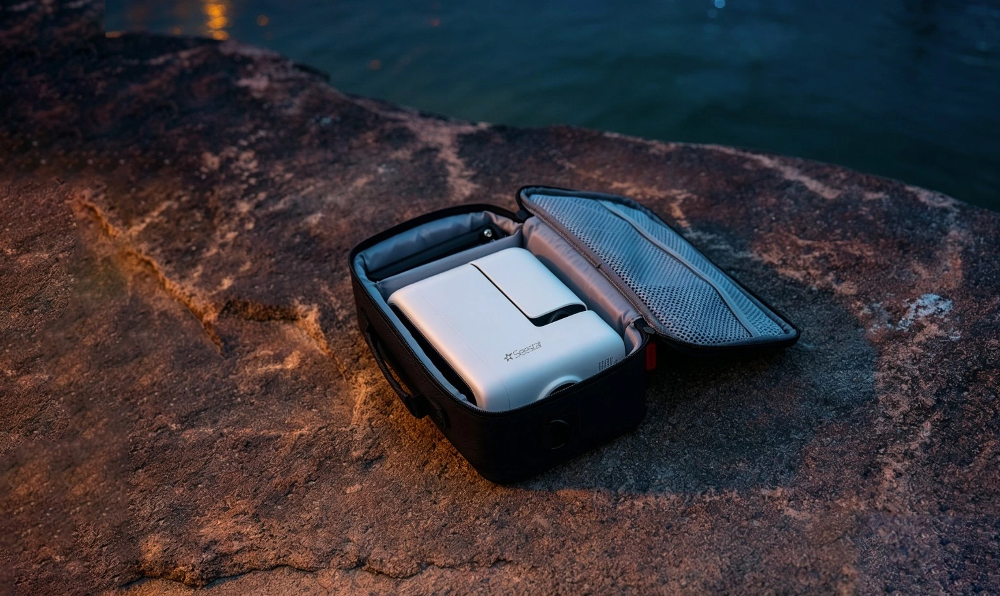
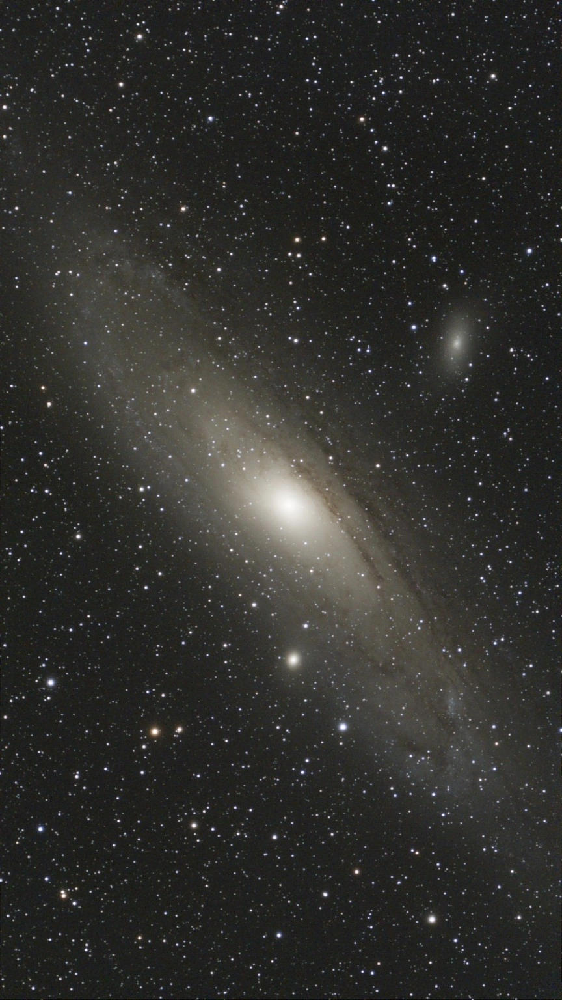
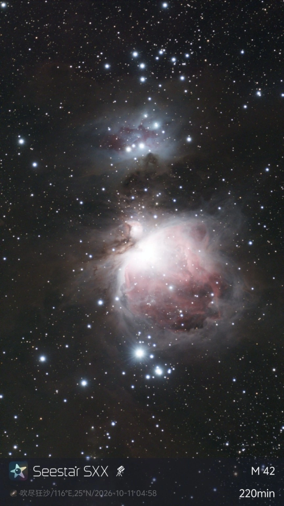
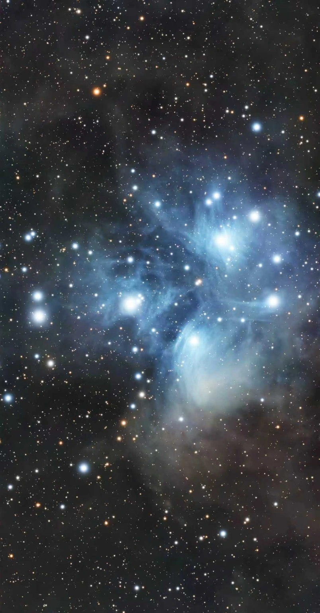
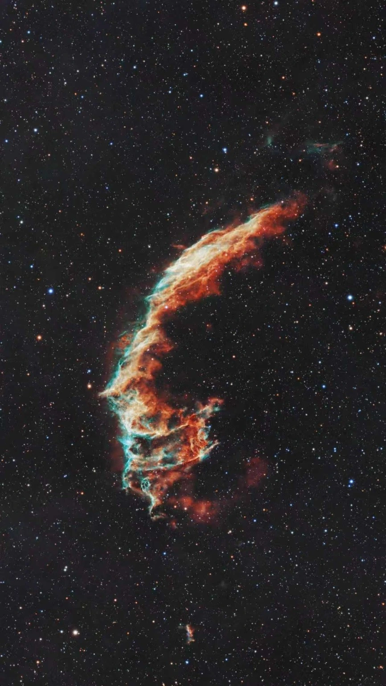

Seestar S30 Plus: First Look, Specifications & Sample Images
A beginner-friendly look at the Seestar S30 Plus, its published features and sample astrophotography supplied by ZWO.
Introduction
The Seestar S30 Plus is designed to make astronomy and astrophotography accessible without a complicated traditional setup. Here we explore the specifications, features and sample images from ZWO's press materials.
Disclosure: This is a first look based on manufacturer information and supplied sample images. We have not physically tested the S30 Plus. Sample images are credited to ZWO and should not be mistaken for our own captures or processing.

Specifications and what they mean for beginners
Specifications from ZWO's S30 Plus press and reviewer materials, explained for beginners.
Design and portability
The S30 Plus weighs 1.65 kg and measures 210 × 140 × 80 mm when closed. Its integrated design combines the cameras, mount, tracking, battery and wireless controls into a compact unit. This is a manufacturer-information first look rather than a hands-on assessment.
Two cameras and APO optics
The telephoto camera is designed for galaxies, nebulae and star clusters, while the separate wide-angle camera is intended for broader night-sky scenes. Both offer 2K output. The four-element apochromatic (APO) telephoto lens uses extra-low-dispersion (ED) glass to reduce unwanted colour fringing around bright stars. The two cameras operate separately rather than capturing simultaneously.
Official sample astrophotography
The following images are manufacturer-supplied examples, not images captured or processed by Our Astro Journey. Capture settings will be added where verified.
Andromeda Galaxy (M31)
Image supplied by ZWO. Capture and processing details to be confirmed.

Orion Nebula (M42)
Image supplied by ZWO. Capture and processing details to be confirmed.

Pleiades (M45)
Image supplied by ZWO. Capture and processing details to be confirmed.

Veil Nebula
Image supplied by ZWO. Capture and processing details to be confirmed.

What could this mean for beginners?
This should be a great entry level smart telescope especially for the price. It has all the features you need to get going right out of the box. Even though tht included mini tripod included is basic, it should do the job needed.
This also comes with a soft case which will help keep it protected when not in use.
You also get an included solar filter for imaging the sun. It is imperrative that you put the solar filter in place before tageting the sun. Especially if you do not want to get a replaicment.
Conclusion
While I like the details of this smart scope, I cant help but compare it to the Dwarf Mini from DwarfLabs as they are very similar in specs. There are a few differences though.
Portability seems the biggest difference to me. The S30 plus is almost twice the weight so although it is still small enough to travel with, it's not the lightest if your traveling with weight restrictions.
Going by the provided images and specs, the potential looks good. Although as any other smart telescope, there is always room to improve with manually stacking and processing the image externally.
Interested in the Seestar S30 Plus? You can explore the telescope and current offers through our Seestar referral link.
Referral disclosure: This is a referral link. Our Astro Journey may receive a benefit if you use it. Offers and eligibility are subject to Seestar's terms. This article is based on manufacturer-supplied information and images, not hands-on testing.